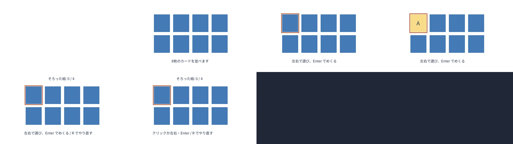
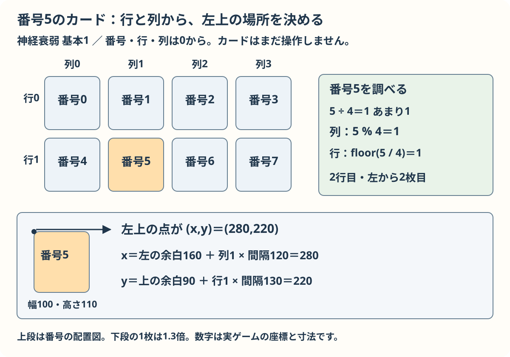
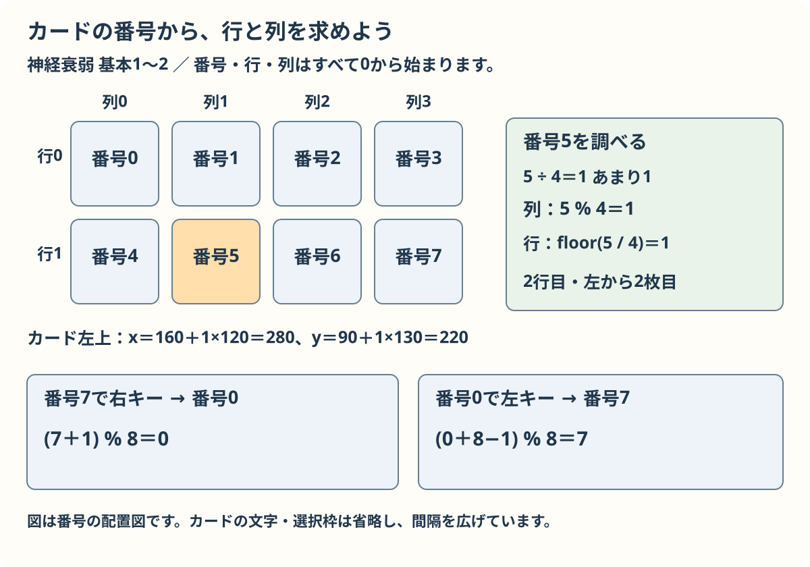
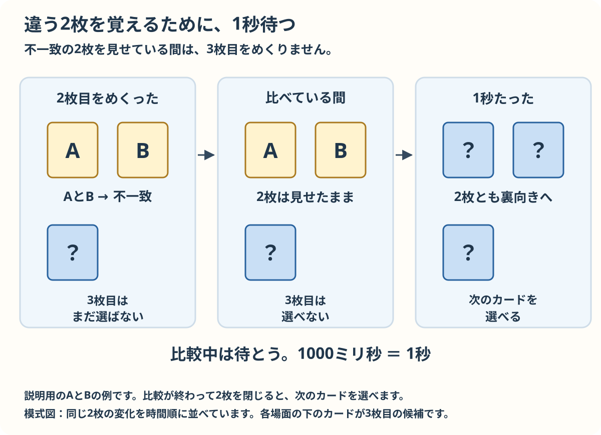
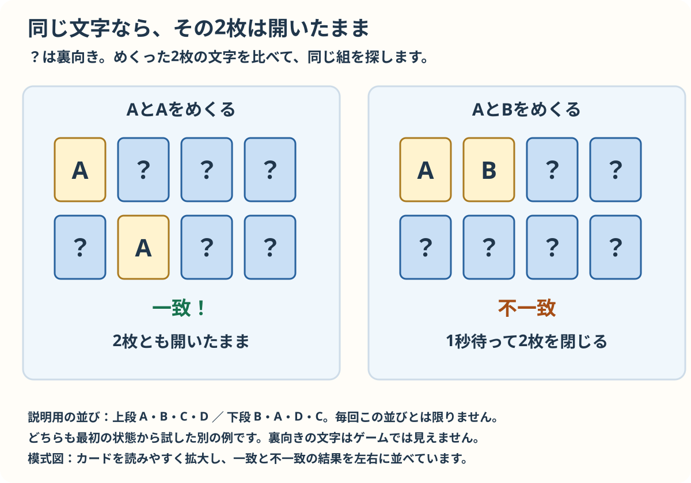
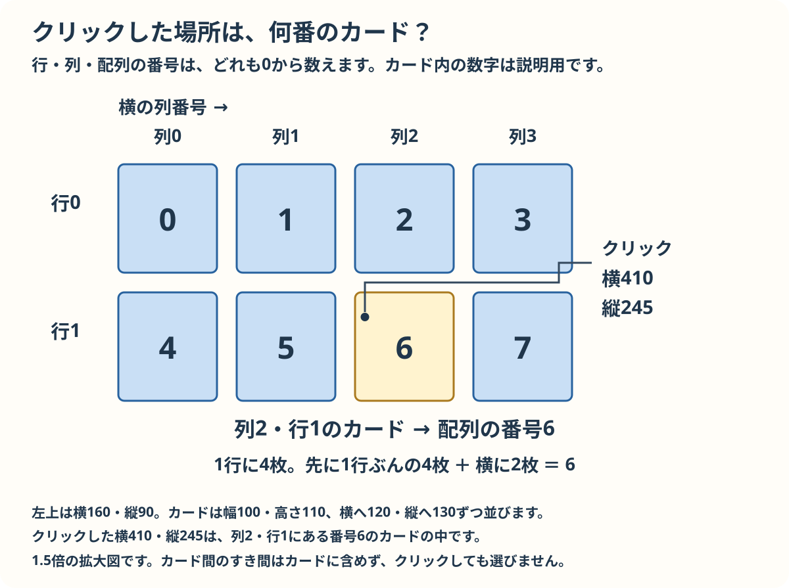

神経衰弱
中級者向け
8枚のカードから2枚ずつ選び、同じ文字の4組をそろえます。クリック、または左右キーとEnterでめくります。完成版は毎回カードを混ぜます。
始める前に
ZIPを展開してできたフォルダーでindex.htmlを開きます。ZIPにはひな型の3ファイルが入っています。
WindowsでZIPを展開する（動画）
3つのファイルは同じフォルダーに入っています。
各ステップでは作業用の script.js を開き、示した部分を順番に置き換えます。index.html と style.css は変更しません。保存後、作業用の index.html を開くか再読み込みします。
document.querySelector("#game-canvas") はHTMLのCanvasを選び、getContext("2d") で絵を描く道具を取り出します。start() は最初の設定、update() は更新、draw() は描画です。gameLoop() は requestAnimationFrame で更新と描画を繰り返します。
ステップ 1：カードを並べる
このステップの見本を図で見る
x = 160 + (i % 4) × 120、y = 90 + floor(i / 4) × 130
i=0〜3は上の段
i=4 → x = 160、y = 90 + 130 = 220
i=4〜7は下の段。全部で8枚
ゲーム画面とコードの前後を見る

このステップの見本
この行を足す前 変わったコードの一例（script.js）
const x = 160 + (i % 4) * 120;
見本で確かめること
裏向きのカードが2行4列で表示されます。
保存してゲーム画面を更新する（動画）
index.html を再読み込みします。目標
A、B、C、Dが2枚ずつある8枚を並べます。
確認欄までは準備中です。作業を順に進め、確認欄で保存して動作を確かめます。
書く場所と置き換えるコード
カードの配列を用意する
作業用フォルダーの script.js で、次の目印を探し、その直後に書きます。
目印
const ctx = canvas.getContext("2d");
書き足すコード
let cards;
変数は値に名前を付けて覚えるものです。cards にカードを表すオブジェクトを順に入れます。
カードの情報を入れる
作業用フォルダーの script.js で、次の目印を探し、その直後に書きます。
目印
function start() {
書き足すコード
cards = [
{letter: "A", open: false, matched: false}, {letter: "B", open: false, matched: false},
{letter: "C", open: false, matched: false}, {letter: "D", open: false, matched: false},
{letter: "B", open: false, matched: false}, {letter: "A", open: false, matched: false},
{letter: "D", open: false, matched: false}, {letter: "C", open: false, matched: false}
];
= は右の値を左に入れ、; は文の区切りです。letter は文字、open は表向きか、matched はそろったかを表します。最初はどちらも false です。

番号5を4で割ると余りは1、商を切り捨てた値も1です。列1・行1から、カードの左上は横280・縦220と計算できます。このステップではカードを並べます。
番号からカードの位置を決める
作業用フォルダーの script.js で、次の目印を探し、その直後に書きます。
目印
ctx.clearRect(0, 0, canvas.width, canvas.height);
書き足すコード
for (let i = 0; i < cards.length; i++) {
const x = 160 + (i % 4) * 120;
const y = 90 + Math.floor(i / 4) * 130;
}
for で8枚を順に扱います。番号 i は0から7、i % 4 は列、Math.floor(i / 4) は行です。5なら列も行も1で、2行目の左から2枚目です。
表向きのカードに文字を描く
作業用フォルダーの script.js で、次の目印を探し、その直後に書きます。
目印
const y = 90 + Math.floor(i / 4) * 130;
書き足すコード
ctx.fillStyle = "#447ab5";
if (cards[i].open || cards[i].matched) ctx.fillStyle = "#f8dc8b";
ctx.fillRect(x, y, 100, 110);
ctx.fillStyle = "#26334a";
ctx.font = "34px sans-serif";
if (cards[i].open || cards[i].matched) ctx.fillText(cards[i].letter, x + 38, y + 68);
ctx はひな型の描画の道具です。fillStyle は色、font は文字の大きさと書体です。|| は「または」で、表向きかそろったカードは色と文字を表示します。幅は100、高さは110です。
カードの案内を描く
作業用フォルダーの script.js で、次の目印を探し、その直後に書きます。
目印
if (cards[i].open || cards[i].matched) ctx.fillText(cards[i].letter, x + 38, y + 68);
}
書き足すコード
ctx.fillStyle = "#26334a";
ctx.font = "22px sans-serif";
ctx.fillText("8枚のカードを並べます", 270, 390);
カードの下に8枚を並べる案内を表示します。
保存後の確かめ方
裏向きのカードが2行4列で表示されます。 ステップ 1 の見本を開く
小さな練習
カードの色を変えて、裏の表示を比べます。 練習後はこのステップのコードに戻してください。
ステップ 2：選んだカードをめくる
このステップの見本を図で見る
このステップの見本
この行を足す前 変わったコードの一例（script.js）
if (event.key === "ArrowRight") {
見本で確かめること
枠が左右に動き、Enterで選んだカードの文字が見えます。
目標
左右キーで選び、Enterで表と裏を切り替えます。
確認欄までは準備中です。作業を順に進め、確認欄で保存して動作を確かめます。
書く場所と置き換えるコード
選択番号を覚える
作業用フォルダーの script.js で、次の範囲を探して置き換えます。
置き換える範囲
let cards;
置き換えるコード
let cards, selected;
selected は選んでいるカードの番号です。
最初のカードを選ぶ
作業用フォルダーの script.js のstart() のカード一覧の末尾を探します。次の ]; の直後に書きます。
カード一覧の最後と目印
{letter: "D", open: false, matched: false}, {letter: "C", open: false, matched: false}
];
書き足すコード
selected = 0;
最初は0番を選びます。
選択中のカードに枠を付ける
作業用フォルダーの script.js で、draw() のカードを描く繰り返しが終わる、次の目印の直後に書きます。
目印
if (cards[i].open || cards[i].matched) ctx.fillText(cards[i].letter, x + 38, y + 68);
}
書き足すコード
const x = 160 + (selected % 4) * 120;
const y = 90 + Math.floor(selected / 4) * 130;
ctx.strokeStyle = "#bd542f";
ctx.lineWidth = 4;
ctx.strokeRect(x - 4, y - 4, 108, 118);
選択番号から左上を求め、strokeRect() で周りに枠を描きます。左上を4ずつ外に広げ、幅108・高さ118にします。
操作の案内を変える
作業用フォルダーの script.js で、次の範囲を探して置き換えます。
置き換える範囲
ctx.fillText("8枚のカードを並べます", 270, 390);
置き換えるコード
ctx.fillText("左右で選び、Enter でめくる", 220, 390);
左右と Enter の操作を案内します。
キー入力を受け取る準備をする
作業用フォルダーの script.js で、次の目印を探し、その直前に書きます。
目印
function gameLoop()書き足すコード
window.addEventListener("keydown", (event) => {
});
keydown はキーを押したときに起きます。
特別な入力を除く
作業用フォルダーの script.js で、次の目印を探し、その直後に書きます。
目印
window.addEventListener("keydown", (event) => {
書き足すコード
if (event.repeat || event.ctrlKey || event.altKey || event.metaKey || event.isComposing) return;
押しっぱなしやCtrl・Alt・Metaとの組み合わせ、変換中の入力を return で除きます。

番号5は 5 % 4 が1、Math.floor(5 / 4) も1なので、行1・列1です。右キーで7の次は0、左キーで0の前は7になります。行と列は0から数えます。
右キーで選択を進める
作業用フォルダーの script.js で、次の目印を探し、その直後に書きます。
目印
if (event.repeat || event.ctrlKey || event.altKey || event.metaKey || event.isComposing) return;
書き足すコード
if (event.key === "ArrowRight") {
selected = (selected + 1) % cards.length;
event.preventDefault();
}
(selected + 1) % cards.length の余りを使うので、最後の7の次は0です。preventDefault() はブラウザーの標準動作を止めます。
左キーで戻す
作業用フォルダーの script.js で、次の範囲を探して置き換えます。
置き換える範囲
if (event.key === "ArrowRight") {
selected = (selected + 1) % cards.length;
event.preventDefault();
}
置き換えるコード
if (event.key === "ArrowRight") {
selected = (selected + 1) % cards.length;
event.preventDefault();
} else if (event.key === "ArrowLeft") {
selected = (selected + cards.length - 1) % cards.length;
event.preventDefault();
}
カードの枚数を足してから1を引き、余りで端をつなぎます。
Enter で表と裏を切り替える
作業用フォルダーの script.js で、次の範囲を探して置き換えます。
置き換える範囲
selected = (selected + cards.length - 1) % cards.length;
event.preventDefault();
}
置き換えるコード
selected = (selected + cards.length - 1) % cards.length;
event.preventDefault();
} else if (event.key === "Enter") {
cards[selected].open = !cards[selected].open;
event.preventDefault();
}
! は true と false を入れ替えます。Enter で表と裏を切り替えます。
保存後の確かめ方
枠が左右に動き、Enterで選んだカードの文字が見えます。もう一度押すと閉じます。 ステップ 2 の見本を開く
小さな練習
選択中の枠の色を変えてみます。 練習後はこのステップのコードに戻してください。
ステップ 3：2枚を比べてそろえる
このステップの見本を図で見る
"A" !== "B" → closeAt = 今 + 1000
1秒待って2枚とも裏へ
今 >= closeAt → open = false
再びカードを選べる
"A" === "A" → matched = true
同じ文字なら表のまま残る
ゲーム画面とコードの前後を見る
このステップの見本
この行を足す前 変わったコードの一例（script.js）
if (closeAt !== 0 || cards[selected].matched || cards[selected].open) return;
見本で確かめること
AとBを開くと1秒後に閉じ、AとAは残ります。
目標
同じなら残し、違うなら1秒後に閉じます。4組でクリアです。
確認欄までは準備中です。作業を順に進め、確認欄で保存して動作を確かめます。
書く場所と置き換えるコード
選んだ番号と組数を覚える
作業用フォルダーの script.js で、次の範囲を探して置き換えます。
置き換える範囲
let cards, selected;
置き換えるコード
let cards, selected, firstIndex, secondIndex, closeAt, pairs, state;
firstIndex と secondIndex は選んだ2枚、closeAt は閉じる時刻、pairs はそろった組数です。
選択と組数を初期化する
作業用フォルダーの script.js で、次の目印を探し、その直後に書きます。
目印
selected = 0;
書き足すコード
firstIndex = -1;
secondIndex = -1;
closeAt = 0;
pairs = 0;
state = "playing";
未選択は -1 にして0番と区別します。閉じる時刻0は待っていない状態です。
時刻になったら2枚を閉じる
作業用フォルダーの script.js で、次の目印を探し、その直後に書きます。
目印
function update() {
書き足すコード
if (closeAt !== 0 && performance.now() >= closeAt) {
cards[firstIndex].open = false;
cards[secondIndex].open = false;
firstIndex = -1;
secondIndex = -1;
closeAt = 0;
}
closeAt が0でなく、その時刻以上なら2枚を閉じ、番号と時刻を戻します。&& は両方の条件が必要です。

AとBが出たら、不一致の2枚を1秒見せます。この間は3枚目をめくらず、場所と文字を覚えましょう。1000ミリ秒は1秒です。2枚が閉じたら、次のカードを選べます。
closeAt が0でない待ち中は新しい選択を受け付けません。Rを押すと、待ちの記録も初期化します。
組数と結果を表示する
作業用フォルダーの script.js で、次の範囲を探して置き換えます。
置き換える範囲
ctx.fillText("左右で選び、Enter でめくる", 220, 390);
置き換えるコード
ctx.fillText("そろった組: " + pairs + " / 4", 300, 50);
if (state === "clear") {
ctx.fillText("全部そろった！ R でもう一度", 220, 390);
} else {
ctx.fillText("左右で選び、Enter でめくる / R でやり直す", 150, 390);
}
そろった組数を表示し、4組そろったらクリアの案内を出します。
カードをめくる準備をする
作業用フォルダーの script.js で、次の目印を探し、その直前に書きます。
目印
window.addEventListener書き足すコード
function turnCard() {
}
turnCard() に選択したカードの処理を書きます。

2枚のカードをめくったら、文字を比べます。AとAなら一致して、その2枚は開いたままです。AとBなら不一致なので、1秒だけ見せてから2枚を閉じます。裏向きのカードの文字を覚えて、同じ組を探しましょう。
cards[firstIndex].letter と cards[secondIndex].letter を比べます。図は説明用の並びで、ステップ3では固定ですが、ステップ4では毎回混ぜます。
選べないカードを除き1枚目を覚える
作業用フォルダーの script.js で、次の目印を探し、その直後に書きます。
目印
function turnCard() {
書き足すコード
if (closeAt !== 0 || cards[selected].matched || cards[selected].open) return;
cards[selected].open = true;
if (firstIndex === -1) {
firstIndex = selected;
return;
}
待ち中、そろったカード、開いているカードは受け付けません。それ以外は表にし、1枚目がまだなければ番号を firstIndex に入れます。
2枚の文字を比べる
作業用フォルダーの script.js で、次の目印を探し、その直後に書きます。
目印
if (closeAt !== 0 || cards[selected].matched || cards[selected].open) return;
cards[selected].open = true;
if (firstIndex === -1) {
firstIndex = selected;
return;
}
書き足すコード
secondIndex = selected;
if (cards[firstIndex].letter === cards[secondIndex].letter) {
cards[firstIndex].matched = true;
cards[secondIndex].matched = true;
firstIndex = -1;
secondIndex = -1;
pairs++;
if (pairs === 4) state = "clear";
} else {
closeAt = performance.now() + 1000;
}
文字が等しければ両方をそろった状態にし、pairs を1増やします。AとAは一致、AとBは不一致です。4組でクリア、不一致なら1秒後の閉じる時刻を覚えます。
待ち中でも R で再挑戦する
作業用フォルダーの script.js で、次の目印を探し、その直後に書きます。
目印
if (event.repeat || event.ctrlKey || event.altKey || event.metaKey || event.isComposing) return;
書き足すコード
if (event.key.toLowerCase() === "r") {
start();
return;
}
if (state !== "playing" || closeAt !== 0) return;
R は待ちの判定より先に start() を呼び、カードと時刻を作り直します。待ち中は3枚目を選べません。
Enter でカードをめくる
作業用フォルダーの script.js で、次の範囲を探して置き換えます。
置き換える範囲
cards[selected].open = !cards[selected].open;
置き換えるコード
turnCard();
Enter で turnCard() を呼び、2枚の比較を進めます。
保存後の確かめ方
AとBを開くと1秒後に閉じ、AとAは残ります。待ち中は3枚目を選べず、Rでいつでもやり直せます。 ステップ 3 の見本を開く
小さな練習
待ち時間の1000ミリ秒を1500に変えて比べます。 練習後はこのステップのコードに戻してください。
ステップ 4：並びを混ぜてクリックでも遊ぶ
このステップの見本を図で見る
160 <= 250 && 250 <= 260
1枚目の中なので選べる
270 > 260 && 270 < 280
隙間なのでカードは開かない
ゲーム画面とコードの前後を見る
このステップの見本
この行を足す前 変わったコードの一例（script.js）
const x = (event.clientX - rect.left) * canvas.width / rect.width;
見本で確かめること
何度かRでやり直すと並びが変わることがあります。
目標
始めるたびに4組を保ってカードを混ぜ、カードをクリックしてめくれるようにします。
確認欄までは準備中です。作業を順に進め、確認欄で保存して動作を確かめます。
書く場所と置き換えるコード
カードを後ろから混ぜる
作業用フォルダーの script.js のstart() のカード一覧の末尾を探します。次の ]; の直後に書きます。
カード一覧の最後と目印
{letter: "D", open: false, matched: false}, {letter: "C", open: false, matched: false}
];
書き足すコード
for (let i = cards.length - 1; i > 0; i--) {
const j = Math.floor(Math.random() * (i + 1));
const card = cards[i];
cards[i] = cards[j];
cards[j] = card;
}
最後の番号7から1まで進み、0から i までの番号を選んで交換します。i が3なら0、1、2、3のどれかです。A〜Dが各2枚あることは変わりません。

図では最初の i が7、選んだ j が1です。番号7のCを一時保存し、番号1のBと交換します。次の i は6なので、番号7はもう交換しません。
クリックの案内を加える
作業用フォルダーの script.js で、次の範囲を探して置き換えます。
置き換える範囲
ctx.fillText("左右で選び、Enter でめくる / R でやり直す", 150, 390);
置き換えるコード
ctx.fillText("クリックか左右・Enter / R でやり直す", 150, 390);
クリックか左右・Enter で遊べることを表示します。
クリックを受け取る準備をする
作業用フォルダーの script.js で、次の目印を探し、その直前に書きます。
目印
function gameLoop()書き足すコード
canvas.addEventListener("click", (event) => {
});
click は Canvas がクリックされたときに起きます。
待ち中を除き座標を直す
作業用フォルダーの script.js で、次の目印を探し、その直後に書きます。
目印
canvas.addEventListener("click", (event) => {
書き足すコード
if (state !== "playing" || closeAt !== 0) return;
const rect = canvas.getBoundingClientRect();
const x = (event.clientX - rect.left) * canvas.width / rect.width;
const y = (event.clientY - rect.top) * canvas.height / rect.height;
プレイ中でないか2枚を閉じる待ち中なら処理を終えます。クリック位置から表示上の左上を引き、内部の幅・高さの比を掛けると、縮小表示でも Canvas 内部の座標になります。

カードの番号は、上の段が0から3、下の段が4から7です。横410・縦245をクリックすると、行1・列2にある番号6のカードを選びます。1行に4枚あるので、行1・列2と番号6は「1行ぶんの4枚と、横の2枚」という関係です。カードの間のすき間をクリックしても、カードは選ばれません。
図の4＋2は配置と番号の説明です。クリック処理は各カードの四角を順に調べて該当する i を選びます。描画の座標には i % 4 と Math.floor(i / 4) を使います。
カードの内側だけ受け付ける
作業用フォルダーの script.js で、次の目印を探し、その直後に書きます。
目印
if (state !== "playing" || closeAt !== 0) return;
const rect = canvas.getBoundingClientRect();
const x = (event.clientX - rect.left) * canvas.width / rect.width;
const y = (event.clientY - rect.top) * canvas.height / rect.height;
書き足すコード
for (let i = 0; i < cards.length; i++) {
const left = 160 + (i % 4) * 120;
const top = 90 + Math.floor(i / 4) * 130;
if (x >= left && x < left + 100 && y >= top && y < top + 110) {
if (cards[i].matched || cards[i].open) return;
selected = i;
turnCard();
return;
}
}
各カードの左上と幅100・高さ110を調べます。横と縦の20ピクセルの隙間は反応せず、右端と下端は含めません。有効なカードを選び turnCard() を呼びます。
保存後の確かめ方
何度かRでやり直すと並びが変わることがあります。カードの隙間は反応せず、待ち中やそろったカードもめくれません。 ステップ 4 の見本を開く
小さな練習
カードの横幅や間隔を変えるとき、描画とクリック判定の両方を直して確かめます。 練習後はこのステップのコードに戻してください。